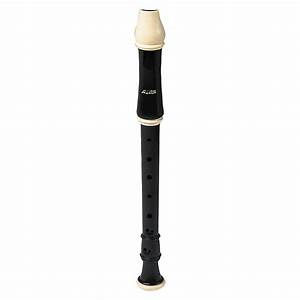
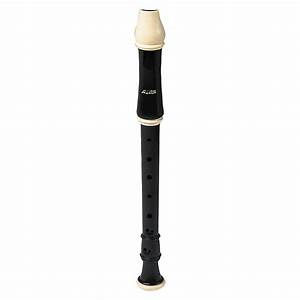
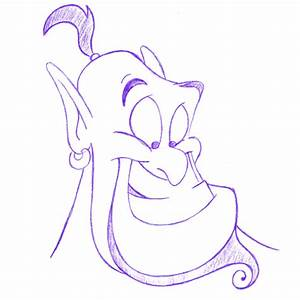
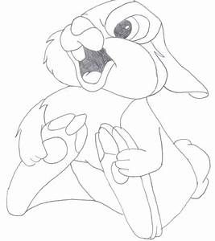
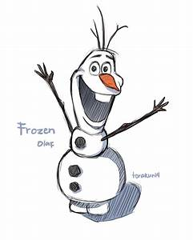
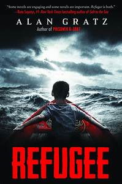
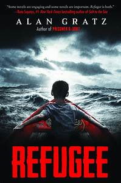
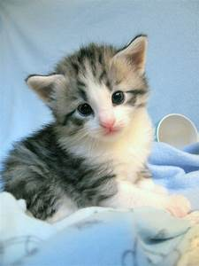
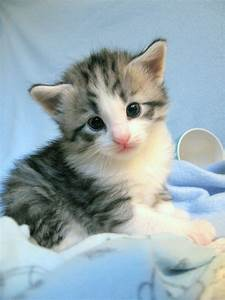

Hi! My name is Zoe! Welcome to my website!😃
Here are a few things about me:
I love music, art, reading and coding. I have 2 little brothers, soon to be 3. I'm 12 and I am a Girl Scout Cadette in Troop 3983. My family is Filipino, though my relatives live all over the place. Some live in the Philippines, some live in Malaysia, and some live in other places. My immediate family has 5 people in it (soon to be six people).


My Hobbies
Music
I love music because I think it is really fun, and it's calming.
I can play piano, recorder, and a little bit of ukelele. Sometimes, I play keyboard at my church. One time, I was the only preteen leading worship!
I also really love singing. I sometimes perform in choirs at my church and got a solo last year at school, and I was going to sing at our performance at Western Sierra (but it got canceled because of coronavirus). I usually listen to Christian music, either on K-LOVE, or on YouTube.

 


Art
I mostly draw on paper, using pencils, markers, crayons and colored pencils.
I usually draw cartoon stuff, though I sometimes draw realistic stuff. I also really like to draw Disney characters. The best ones I've drawn are probably the Genie from Aladdin, Thumper from Bambi, Olaf from Frozen, and Mickey Mouse.




Reading
I love to read, and it's one of the things I do the most.
Some of my favorite books are Anne of Green Gables, Refugee and Counting by Sevens.
 


Coding
Coding is something that I've been interested in for a long time. My dad's a programmer, so I started learning coding from him. I started by using some coding games, and then Blockly. Then, I started learning Python and Html.
My favorite animals
I like...
- Fennec Foxes
- Cats
- Dogs
- Dolphins
- Pandas
 

My top 3 favorite holidays
- Christmas
- New Year's Eve/Day
- Easter